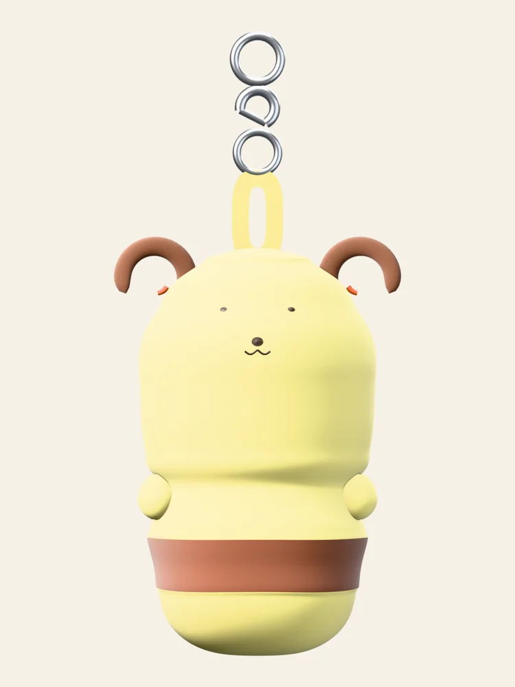
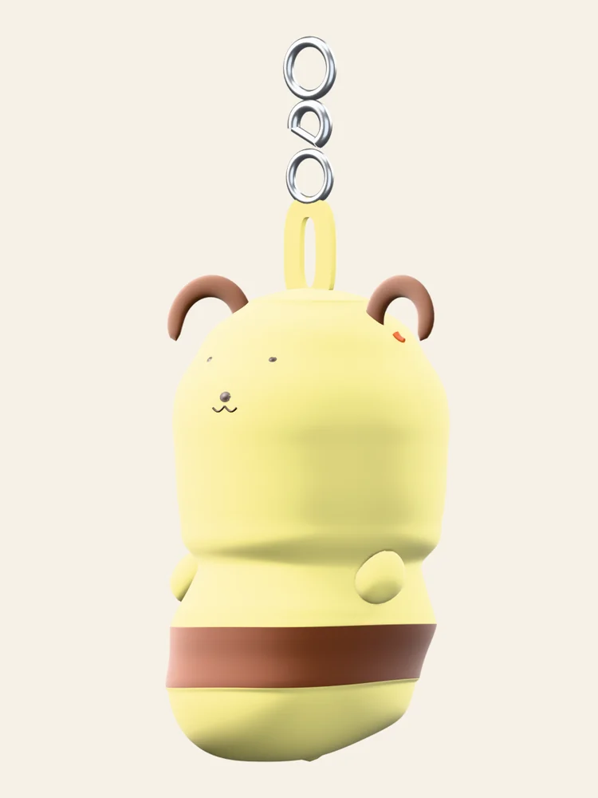
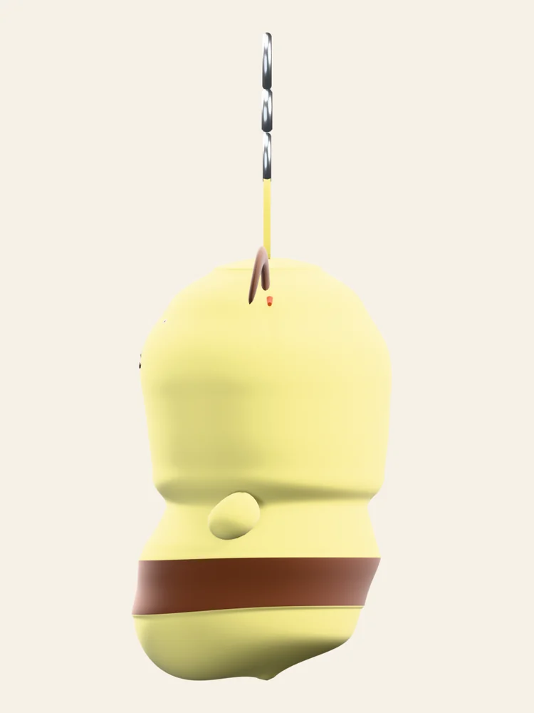
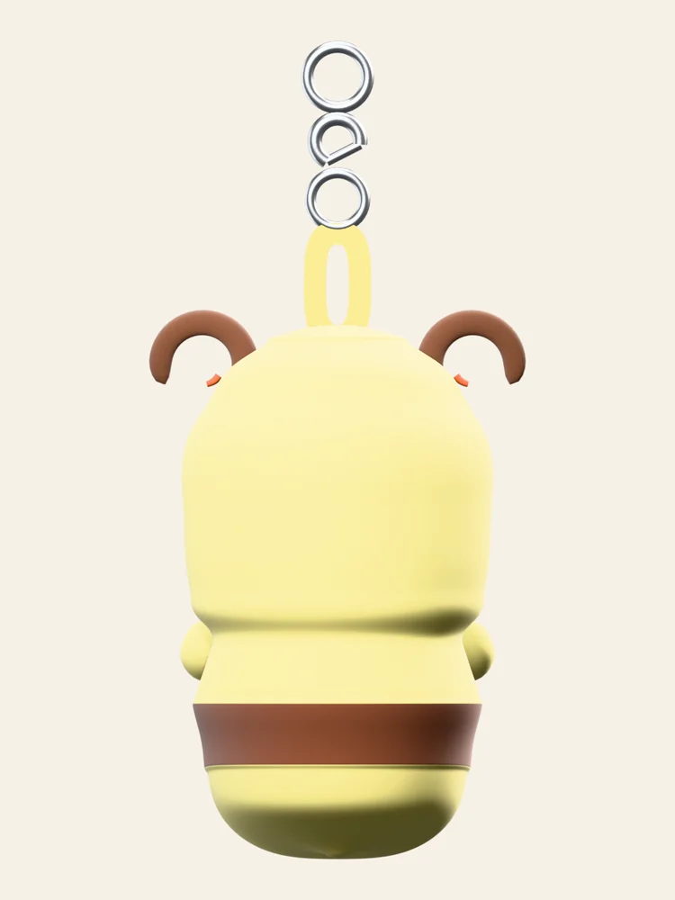
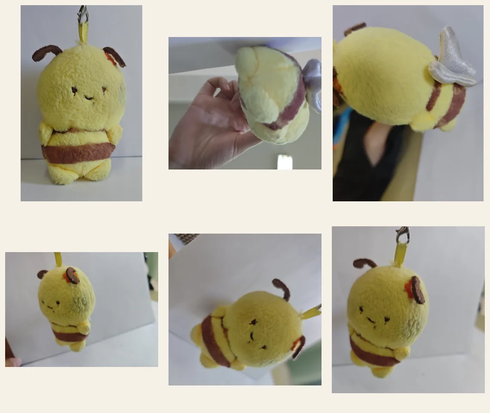
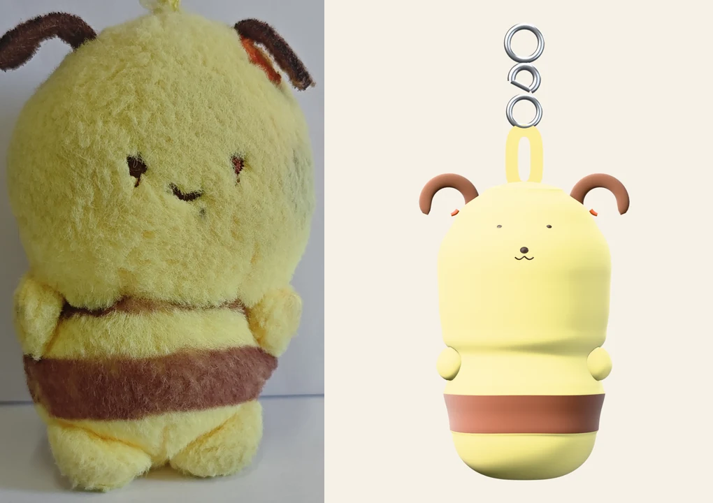
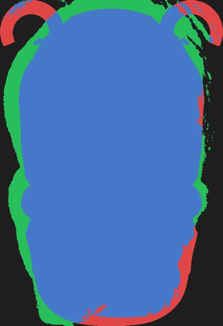
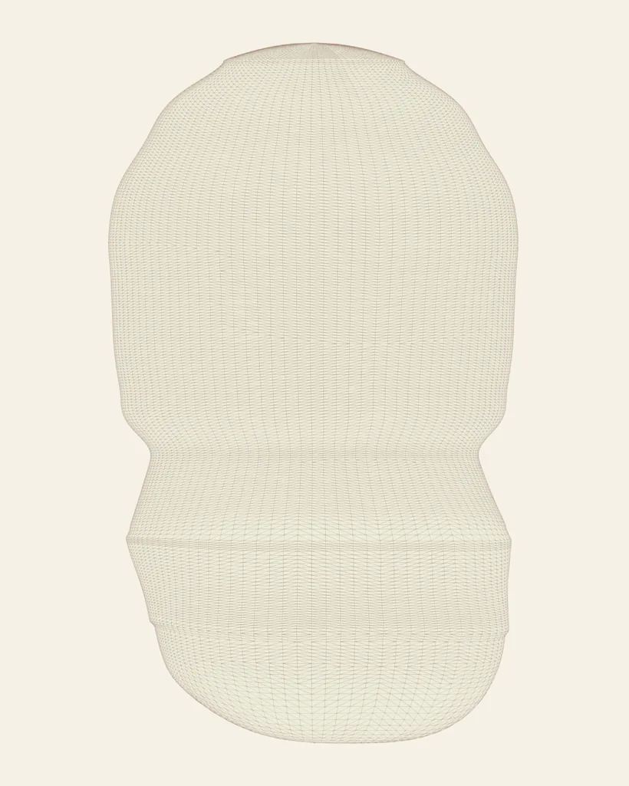
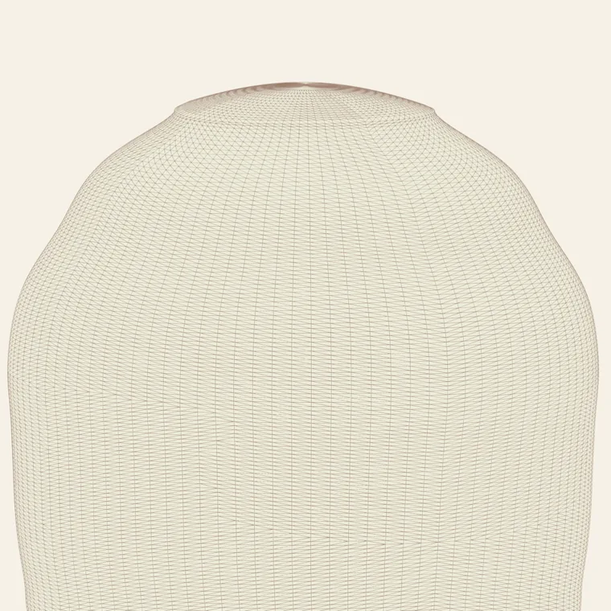

Specimen No. 001毛绒玩具 / 钥匙�?/span>
蜂蜜罐小�?br>照片驱动�?3D 重建
�?6 张手机照片为唯一输入：先分割出毛绒轮廓并逐行测量半径�? 再旋成一张连续封闭曲面，最后补上爪垫、卷曲缎带耳、罐带浮雕与五金�? 正面剪影与照片逐行宽度误差多在 ±5% 以内�?
- 三角�?/dt>
- 56,184
- 部件
- 17
- 材质
- 7
- 尺寸
- 69×61×151mm
拖拽旋转 · 滚轮缩放 · 手机可点 AR




规格
按标本档案习惯记录：真实尺寸、面数、拓扑健康度与坐标朝向�?/p>
几何
- 三角�?/dt>
- 56,184
- 顶点
- 28,141
- 主体面数
- 48,960
- 非流形边
- 0
- 孤立顶点
- 0
- UV 图层
- 每件 1 �?/dd>
尺寸（毫米）
- 毛绒本体
- 57.5 × 60.6 × 98.4
- 含耳与爪垫
- 69.4 × 60.6 × 101.0
- 含五�?/dt>
- 69.4 × 60.6 × 150.7
- 场景单位
- 公制 · 1 BU = 1 m
- 朝向
- 脸朝 +Z（glTF�?/dd>
- 原点
- 底部中心
部件
- 主体
- PlushBody
- 爪垫
- Arm_L / Arm_R
- 耳朵
- Ear_L / Ear_R / EarInner_L / EarInner_R
- 脸部
- Eye_L / Eye_R / Nose / Mouth_L / Mouth_R
- 缎带
- RibbonLoop
- 五金
- SplitRing / ClaspBody / ClaspGate / TopRing
从照片到模型
轮廓不是目测描的：先把主体从背景里分离，再逐行读出左右边缘�?/p>
- 01
分离主体
主体是全画面唯一的强暖色物体。以「低饱和」为可通行区域从四边洪泛填充， 填不到的地方就是主体——自动忽略中性投影与金属挂环，且不会在绒毛内部留洞�?/p>
- 02
测量轮廓
逐行取最长连续段得到左右边缘，做离群剔除、中值与对称化， 输出 200 点归一化半径剖面；同时定位毛绒�?底、中线与棕色罐带区间�?/p>
- 03
旋成曲面
剖面旋成 96 �?× 255 环的连续曲面。罐底用解析圆弧收口�? 头顶用实测穹顶曲率半径闭合，罐带用材质分界加 0.55 mm 浮雕�?/p>
- 04
补回被挡住的细节
正面轮廓在头部下沿其实是「头的投影」，更细的罐体被头挡住�? 按照片里 t�?.42 的折痕重建台阶——正面剪影不变，3/4 视角才有正确的肩部外挑�?/p>



校验结果：按底边对齐、按高度归一化后，剪�?IoU = 0.837�? 宽高�?0.685（照�?0.667），逐行宽度平均误差 7.9%�? 差异主要来自绒毛边缘的虚化（照片剪影本身�?±5% 的不确定度）与耳朵上沿�?1 mm 的高度差�?
布线
主体是纯四边形的旋转体，导出前统一三角化，因此三角面走向跟随经纬线，没有乱三角与重叠面�?/p>


材质
7 个纯 Principled BSDF 基础材质，不含贴图，所�?.blend �?.glb 在任何查看器里表现一致�?/p>
M_PlushYellow#E7DA82 · 粗糙 0.93 · 绒面 0.3M_BandBrown#6B3B27 · 粗糙 0.90M_EarBrown#5B3623 · 粗糙 0.90M_InnerOrange#C2541F · 粗糙 0.88M_ThreadDark#2A1810 · 粗糙 0.55M_RibbonYellow#DCCC63 · 粗糙 0.72M_MetalSilver#C6C9CD · 粗糙 0.30 · 金属 1.0下载
GLB 可直接拖�?Blender / Unity / Unreal / Three.js / Windows 3D 查看器；.blend 保留完整材质、灯光与相机�?/p>
绝对尺寸按钥匙扣常见规格设定（毛绒本体高 �?98 mm），照片中没有可比对标物�? 因此这是设定值而非测量值；�?Blender 中整体缩放即可，几何不受影响�?